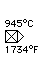
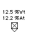
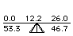

Distributed By: Virtual Labs
Phase Diagram Controls
The following controls are used by Desktop Microscopist to display the current
values for relative proportions of phases and elements and temperatures.
Temperature Controls;
I. This control is used to position the horizontal temperature reference
line. The control provides a method for determining the temperature associated
with various aspects of the phase diagram. It also provides the temperature
for which the lever rule is evaluated..
Composition Control;
I. This control is used to select a reference composition. It displays that
composition in both atomic and weight percentages. Additionally this control
specifies the center composition in a two phase field for lever rule calculations.
Lever Rule Display;
I. Displays the information associated with phase field designated by the
intersection of the Temperature and composition control lines. The various
numbers are as follows:.i.Phase Diagram:Controls:Lever Rule Display;
1. Top Left: Composition of the left side of a two phase field.
1. Top Center: Composition of interest.
I. Top Right: Composition of the right side of a two phase field.
1. Bottom Left: Percentage of left side phase present.
I. Bottom Left: Percentage of right side phase present.
II. These numbers update as the temperature and composition control values
change.
Author: J.ames T.
Stanley
 Desktop
Manual
Desktop
Manual
Distributed By: Virtual
Labs
Last Updated:1/12/96 Sat, Apr 27, 1996